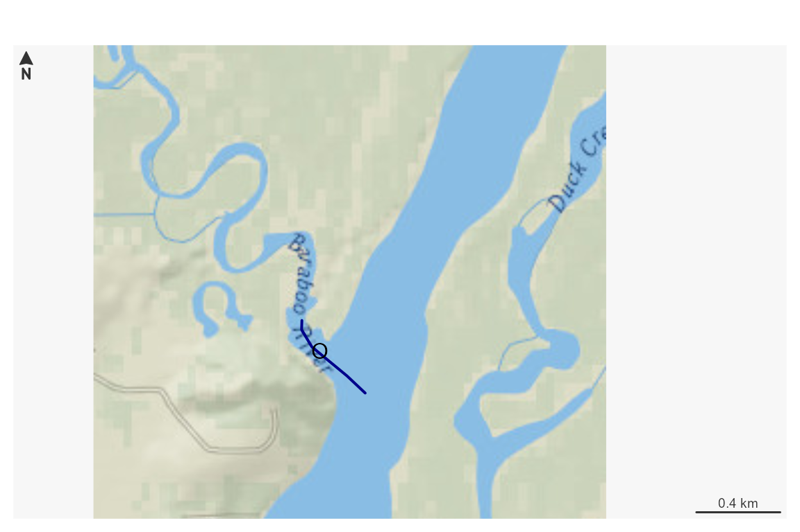
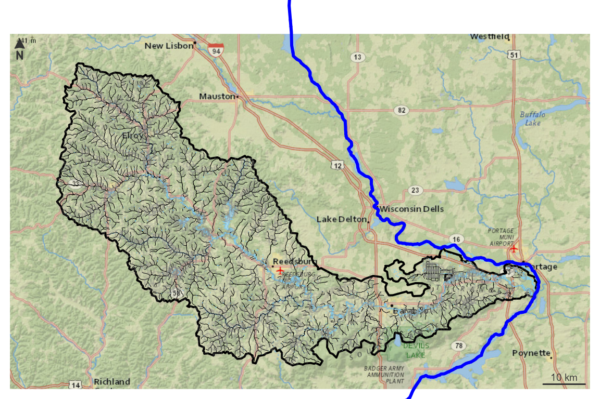
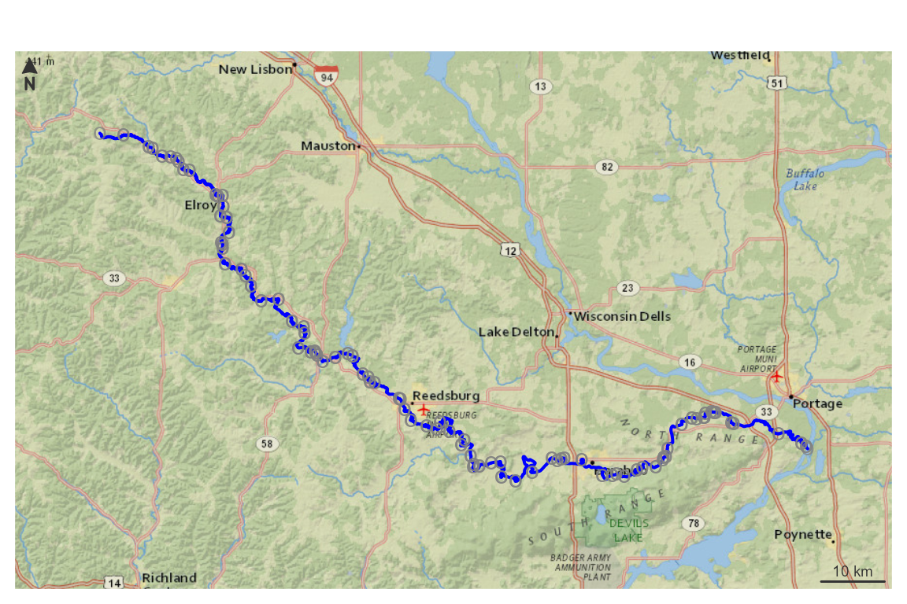

This vignette shows how to work with a new service based on data from the 3D Hydrography Program (3DHP) released in 2024. 3DHP data uses “mainstem” identifiers as the primary river ID. We’ll work with one for the Baraboo River in Wisconsin.
We can find one to start with at a url like:
https://reference.geoconnex.us/collections/mainstems/items?filter=name_at_outlet ILIKE '%Baraboo%'
This url searches the reference mainstem collection for rivers with
names like “Baraboo”. Using that url query, we can find that the Baraboo
mainstem ID is https://geoconnex.us/ref/mainstems/359842
and that it flows to the Wisconsin and Mississippi
https://geoconnex.us/ref/mainstems/323742 and
https://geoconnex.us/ref/mainstems/312091 respectively. At
the reference mainstem page, we can also find that the outlet NHDPlusV2
COMID is
https://geoconnex.us/nhdplusv2/comid/937070225.
The code block just below generates starting locations based on information derived from the reference mainstem for the Baraboo and a point location near the Baraboo’s outlet. It queries the 3DHP service for a flowline within a 10m buffer of the point specified just to get us started.
comid <- "937070225"
point <- c(-89.441, 43.487) |>
sf::st_point() |>
sf::st_sfc(crs = 4326) |> sf::st_sf()
dm <- c('https://geoconnex.us/ref/mainstems/323742',
'https://geoconnex.us/ref/mainstems/312091')
flowline <- get_3dhp(point, type = "flowline", buffer = 10)
pc <- function(x) sf::st_geometry(sf::st_transform(x, 3857))
plot_nhdplus(bbox = sf::st_bbox(flowline), plot_config = list(flowline = list(col = NULL)), zoom = 14)
plot(pc(flowline), add = TRUE, col = "darkblue", lwd = 2)
plot(pc(point), pch = "O", add = TRUE)
Now, we can use dataRetrieval to retrieve a basin upstream of this outlet location. We specify the NHDPlusV2 comid here since we know it, but could have used the point location just as well.
With the basin pulled from the findNLDI()
function, we can pass it to get_3dhp() as a Area of
Interest for flowlines, waterbodies, and hydrolocations. We can then use
the mainstem ids of our two downstream mainstem rivers found above to
get the downtream mainstem rivers.
basin <- dataRetrieval::findNLDI(comid = comid, find = "basin")
network <- get_3dhp(basin$basin, type = "flowline")
water <- get_3dhp(basin$basin, type = "waterbody")
hydrolocation <- get_3dhp(basin$basin, type = "hydrolocation")
#> Warning in (function (AOI = NULL, ids = NULL, type = NULL, where = NULL, :
#> sink, spring, waterbody outlet features found but were outside area of interest
#> polygon.
#> Warning: No sink, spring, waterbody outlet features found
#> Warning: No headwater, terminus, divergence, confluence, catchment outlet
#> features found in area of interest.
down_mains <- get_3dhp(ids = dm, type = "flowline")
old_par <- par(mar = c(0, 0, 0, 0))
plot_nhdplus(bbox = sf::st_bbox(basin$basin), flowline_only = TRUE,
plot_config = list(flowline = list(col = NULL)), zoom = 10)
plot(pc(basin$basin), lwd = 2, add = TRUE)
plot(pc(network), lwd = 0.5, add = TRUE)
plot(pc(water), lwd = 0.5, border = "skyblue", col = "lightblue", add = TRUE)
plot(pc(hydrolocation), pch = "o", col = "#80808026", add = TRUE)
plot(pc(down_mains), lwd = 3, col = "blue", add = TRUE)
par(old_par)
old_par <- par(mar = c(0, 0, 0, 0))
plot(pc(down_mains))
plot(pc(basin$basin), add = TRUE)
par(old_par)Neat. Now we have flowlines, waterbodies, hydrologic locations, a basin boundary, and major rivers downstream to work with. These could be saved to a local file for use in a GIS or used in some further analysis.
Say you want to know how to relate NHD data to 3DHP data. 3DHP
hydrolocations include “reachcode” tops and bottoms to hel with that.
Here, we lookup the hydrolocation with reachcode
07070004002889then grab the rest of the reachcode
hydrolocations along the mainstem that the reachcode is part of.
reachcode <- "07070004002889"
hydrolocation <- get_3dhp(universalreferenceid = reachcode,
type = "reach code, external connection")
hydrolocation
#> Simple feature collection with 2 features and 10 fields
#> Geometry type: POINT
#> Dimension: XY
#> Bounding box: xmin: -89.44179 ymin: 43.48568 xmax: -89.43904 ymax: 43.48829
#> Geodetic CRS: WGS 84
#> id3dhp featuredate mainstemid
#> 1 01HAJW7 1694649600000 https://geoconnex.us/ref/mainstems/359842
#> 2 01SVVYQ 1694649600000 https://geoconnex.us/ref/mainstems/359842
#> universalreferenceid gnisid gnisidlabel featuretype featuretypelabel
#> 1 07070004002889 <NA> <NA> 10 Reachcode Start
#> 2 07070004002889 <NA> <NA> 11 Reachcode End
#> edhuniqueid workunitid geometry
#> 1 <NA> <NA> POINT (-89.44179 43.48829)
#> 2 <NA> <NA> POINT (-89.43904 43.48568)
mainstem_points <- get_3dhp(ids = hydrolocation$mainstemid, type = "reach code, external connection")
mainstem_lines <- get_3dhp(ids = hydrolocation$mainstemid, type = "flowline")
old_par <- par(mar = c(0, 0, 0, 0))
plot(pc(hydrolocation), pch = "o", col = "#808080BF")
plot(pc(mainstem_lines), lwd = 2, col = "blue", add = TRUE)
par(old_par)
old_par <- par(mar = c(0, 0, 0, 0))
plot_nhdplus(bbox = sf::st_bbox(basin$basin), flowline_only = TRUE,
plot_config = list(flowline = list(col = NULL)), zoom = 10)
#> Zoom set to: 10
plot(pc(mainstem_lines), lwd = 2, col = "blue", add = TRUE)
plot(pc(mainstem_points), pch = "o", col = "#808080BF", add = TRUE)
par(old_par)With this functionality, we have what we need to inter operate
between older NHD data and newly released 3DHP data. This service is
brand new and nhdplusTools is just getting going with
functionality to support what’s shown here. Please submit issues
if you find problems or have questions!!